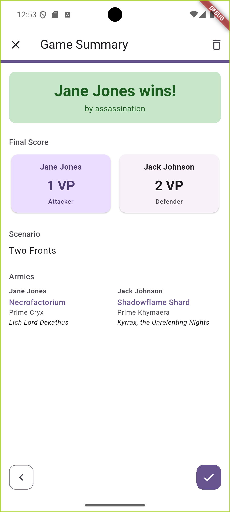
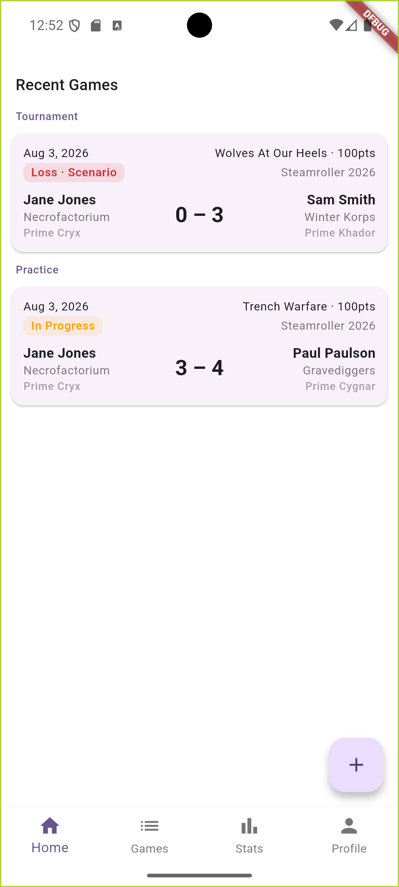
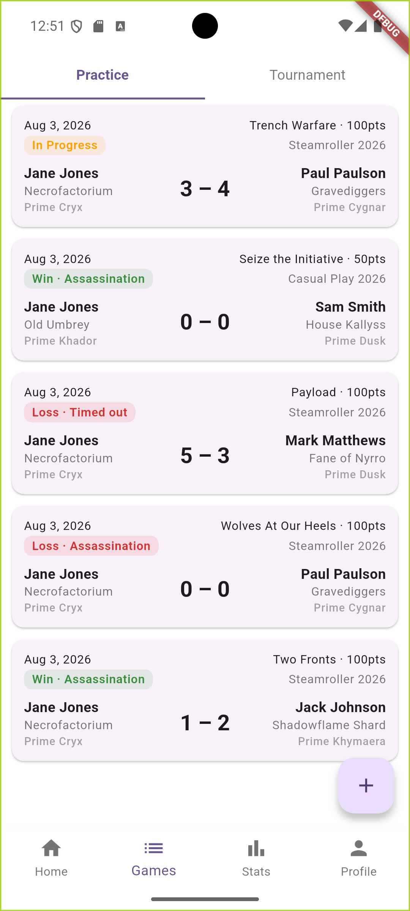
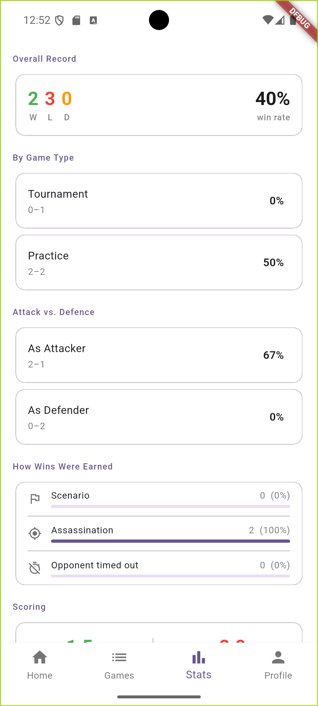
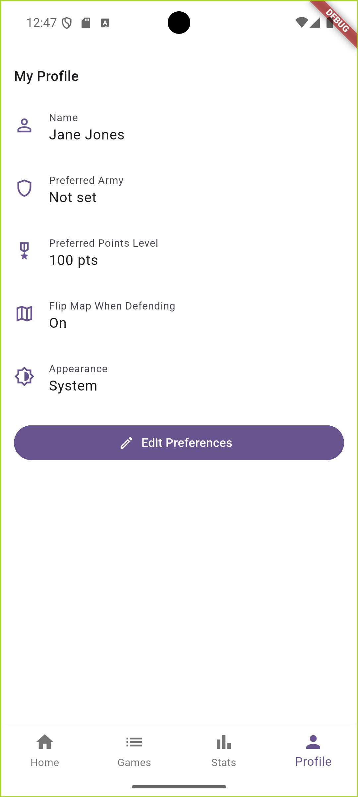

Steamroller App is the pocket companion for Warmachine players who are done accidentally rolling their VP dice or tracking things on scraps of paper. Run a guided game setup, track turn-by-turn scoring live at the table, and build a real record of your wins, losses, and favourite armies.
Free to use. No subscriptions needed.

Steamroller App replaces the notepad, the VP dice, and the "wait, whose turn was it to score?" arguments with one focused tool built around how Warmachine is actually played.
Walk through game type, points level, scenario format, armies, leaders, and who attacks first - with random scenario selection and a scenario preview so nobody has to dig out a rulebook.
Scenario terrain decisions, alternating deployment, advanced deployment - the app walks attacker and defender through it step by step so nothing gets skipped.
A running scoreboard for both players plus a scenario-specific scoring table with per-rule counters, so control points and objectives are logged the instant they happen.
Scenario win, assassination, or timeout - mark exactly how the game ended, and get an automatic VP-gap warning the turn a game is coming to a close.
Win/loss/draw record, attacker vs. defender performance, average VP scored and conceded, your most-played army, and your most-faced opponent - broken down by scenario and game type.
Every game you log is saved, split by Practice and Tournament, so you can revisit any past matchup, scenario, or result in seconds.
A clean, fast interface designed to be glanced at between activations - not fought with.

Home
Jump back into your latest games

Games
Full practice & tournament history

Stats
Wins, losses, and scoring trends

Profile
Set your defaults once, reuse every game
Stop trying to remember whether you actually win more as the attacker or the defender. Steamroller App logs every game on so your stats page can answer questions like:
The Steamroller App makes it easy to record your game progress as you go. No need for extra dice, counters, scraps of paper, or other markers that get lost or changed in the heat of battle.
Free to download. No account needed. No ads. Just a faster way to run and remember every Warmachine game you play.